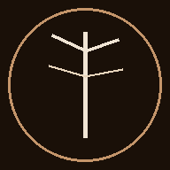

Einfach auf Play drücken, genießen und lesen 🎧
Just hit play, sit back and read 🎧
Media & Tech-Enthusiast aus München. Ich baue Tools, automatisiere Prozesse und experimentiere mit KI — nach Feierabend.
Media & tech enthusiast from Munich. I build tools, automate workflows and experiment with AI — after hours.
Ich bin in der Medienbranche zu Hause — mit Wurzeln in der Filmpostproduktion (Bavaria Film) und seit über 20 Jahren im TV-Werbevermarktung tätig. Neben dem Beruf habe ich mich intensiv mit KI-Tools, Home-Automatisierung und Audio-Produktion beschäftigt. Ich liebe es, Dinge selbst zu bauen: von kleinen Skripten die meinen Alltag erleichtern bis hin zu komplexeren Automatisierungen rund um meinen Home Server.
I'm rooted in the media industry — starting in film post-production (Bavaria Film) and working in TV advertising for over 20 years. Outside of work, I've dived deep into AI tools, home automation and audio production. I love building things: from small scripts that simplify daily life to more complex automations around my home server.
Dinge die ich in meiner Freizeit gebaut, automatisiert oder ausprobiert habe.
Things I've built, automated or experimented with in my spare time.

KI-gestützter E-Mail-Scanner und Organizer — analysiert eingehende Mails, filtert, kategorisiert und reagiert nach definierten Regeln. Läuft 24/7 auf meinem Home-Server.
AI-powered email scanner and organizer — analyses incoming mails, filters, categorizes and responds based on custom rules. Runs 24/7 on my home server.
Raspberry Pi 5 als NAS, Medienserver und Automatisierungs-Hub. Eigenes Netzwerk-Monitoring, Wake-on-LAN, automatische Backups und KI-gestützte Cronjobs.
Raspberry Pi 5 as NAS, media server and automation hub. Custom network monitoring, Wake-on-LAN, automated backups and AI-driven cron jobs.
Persönlicher KI-Assistent auf Basis von OpenClaw + Claude AI — läuft 24/7 auf meinem Home-Server. Tägliches Briefing (Wetter, News, Crypto, Kalender), Telegram-Integration, Kamera-Snapshots, Sprachausgabe und vollautomatische Cron-Aufgaben.
Personal AI assistant built on OpenClaw + Claude AI — running 24/7 on my home server. Daily briefing (weather, news, crypto, calendar), Telegram integration, camera snapshots, text-to-speech and fully automated cron tasks.
VBA-Makros zur automatischen Verarbeitung von Mediadaten — z.B. Aufteilen kombinierter Spalten (LP/Sek), Euro-Formatierung, Batch-Verarbeitung beliebiger Dateien.
VBA macros for automatic processing of media data — e.g. splitting combined columns (LP/Sec), Euro formatting, batch processing of any similarly structured file.
Musik- und Audioproduktion mit Ableton Live. Früher Live-Produktion und Moderation bei einem Webradio-Sender (2003–2004) — von der Aufnahme bis zum Sendebetrieb.
Music and audio production with Ableton Live. Former live production and on-air hosting at a web radio station (2003–2004) — from recording to broadcast.
Suricata IDS, Kamera-Integration (Tapo RTSP), automatische Sicherheits-Alerts per Telegram. Überwachung des Heimnetzwerks mit eigenen Skripten.
Suricata IDS, camera integration (Tapo RTSP), automatic security alerts via Telegram. Home network monitoring with custom scripts.
MTB & Rennrad seit 2018, mit eigener Strava-Automatisierung: neue Aktivitäten werden automatisch per Telegram gemeldet.
Mountain biking & road cycling since 2018, with custom Strava automation: new activities are automatically reported via Telegram.
Xbox Series X, Gamertag PonySlayer8515 — eigene OpenXBL-API-Anbindung liest Gamerscore und Spielverlauf live aus.
Xbox Series X, gamertag PonySlayer8515 — custom OpenXBL API integration reads Gamerscore and play history live.
Technologien und Bereiche mit denen ich regelmäßig arbeite.
Technologies and areas I work with regularly.
Interesse an einem Projekt oder Austausch? Einfach mailen.
Interested in a project or just want to connect? Drop me a mail.
patrick.merkert@gmail.com